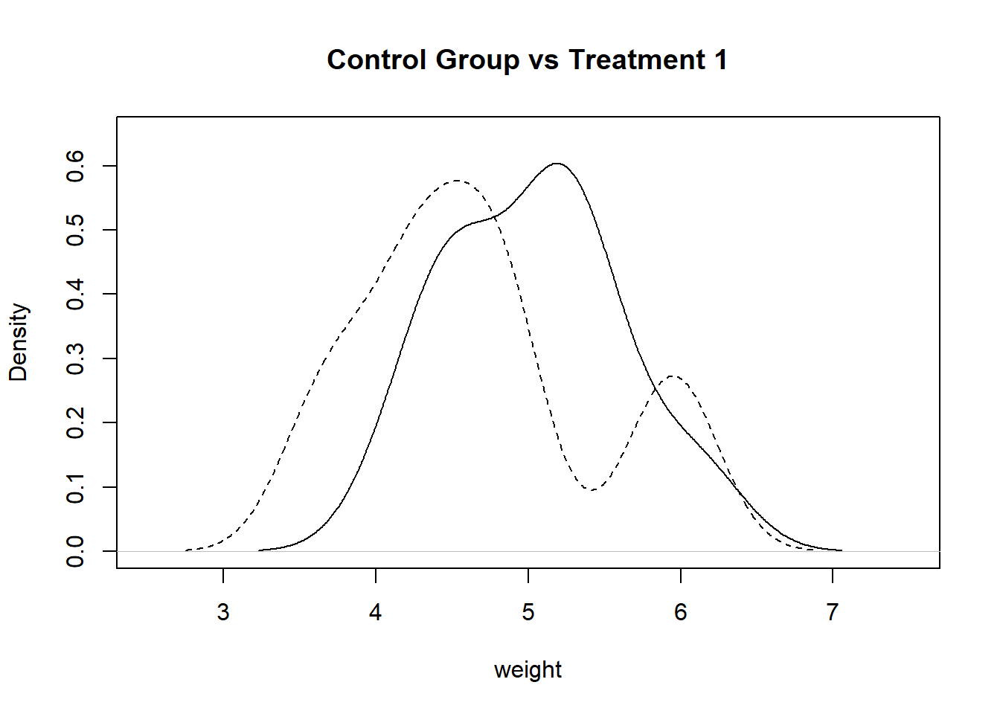

Chapter 6 Answers
6.1 Answer for Exercise4.4
library(ggplot2)
data("mpg")A1
length(unique(mpg$manufacturer))## [1] 15A2
table(mpg[mpg$class=="suv","manufacturer"])##
## chevrolet dodge ford jeep land rover lincoln mercury
## 9 7 9 8 4 3 4
## nissan subaru toyota
## 4 6 8A3
mpg[grepl("auto",mpg$trans)&mpg$cyl==4,]## # A tibble: 41 x 11
## manufacturer model displ year cyl trans drv cty hwy fl class
## <chr> <chr> <dbl> <int> <int> <chr> <chr> <int> <int> <chr> <chr>
## 1 audi a4 1.8 1999 4 auto(~ f 18 29 p compa~
## 2 audi a4 2 2008 4 auto(~ f 21 30 p compa~
## 3 audi a4 quat~ 1.8 1999 4 auto(~ 4 16 25 p compa~
## 4 audi a4 quat~ 2 2008 4 auto(~ 4 19 27 p compa~
## 5 chevrolet malibu 2.4 1999 4 auto(~ f 19 27 r midsi~
## 6 chevrolet malibu 2.4 2008 4 auto(~ f 22 30 r midsi~
## 7 dodge caravan~ 2.4 1999 4 auto(~ f 18 24 r miniv~
## 8 honda civic 1.6 1999 4 auto(~ f 24 32 r subco~
## 9 honda civic 1.6 1999 4 auto(~ f 24 32 r subco~
## 10 honda civic 1.8 2008 4 auto(~ f 25 36 r subco~
## # ... with 31 more rowsA4
mpg$trans_subtype <- gsub(".*\\((.*)\\)","\\1",mpg$trans)A5
mpg[mpg$model=="toyota tacoma 4wd","model"] <- "tacoma 4wd"
#or
mpg$model <- gsub("^toyota ", "",mpg$model)A6
mpg$ID <- paste0(toupper(substr(mpg$manufacturer,1,3)),"_",mpg$year)A7
table(mpg[grepl('\\d',mpg$model),"manufacturer"])##
## audi chevrolet dodge ford jeep lincoln mercury nissan
## 18 9 37 16 8 3 4 4
## toyota
## 15A8
manufacturers <- unique(mpg$manufacturer)
sapply(manufacturers, function(x){
mean(mpg[mpg$manufacturer==x,]$cty)
})## audi chevrolet dodge ford honda hyundai jeep
## 17.61111 15.00000 13.13514 14.00000 24.44444 18.64286 13.50000
## land rover lincoln mercury nissan pontiac subaru toyota
## 11.50000 11.33333 13.25000 18.07692 17.00000 19.28571 18.52941
## volkswagen
## 20.92593A9
manufacturers <- unique(mpg$manufacturer)
sapply(manufacturers, function(x){
x <- mean(mpg[mpg$manufacturer==x&grepl('\\d',mpg$model),]$cty)
if(is.na(x)){0}else{x}
})## audi chevrolet dodge ford honda hyundai jeep
## 17.61111 12.66667 13.13514 12.93750 0.00000 0.00000 13.50000
## land rover lincoln mercury nissan pontiac subaru toyota
## 0.00000 11.33333 13.25000 13.75000 0.00000 0.00000 14.93333
## volkswagen
## 0.00000A10
mpg_summary <- data.frame(A=character(), B=character(), C=character(), D=character(),
E=character(), F=character(), G=character(), H=character(),
I=character(), J=character(), K=character(), L=character())
for(x in unique(mpg$manufacturer)){
subset <- mpg[mpg$manufacturer==x,]
A <- x
B <- length(unique(subset$model))
C <- mean(subset$displ)
D <- paste0(min(subset$year),"-",max(subset$year))
E <- mean(subset$cyl)
F <- paste(names(which(table(subset$trans)==max(table(subset$trans)))),collapse = "|")
G <- paste(names(which(table(subset$trans)==min(table(subset$trans)))),collapse = "|")
H <- max(subset$cty)
I <- min(subset$hwy)
J <- paste(unique(subset$fl),collapse = "|")
K <- subset$class[which.max(nchar(subset$class))]
largest_value <- max(gsub(".(\\d)","\\1",subset$trans_subtype[grepl("\\d",subset$trans_subtype)]))
L <- paste(unique(subset$trans_subtype[grepl(largest_value,subset$trans_subtype)]), collapse = "|")
mpg_summary[nrow(mpg_summary)+1,] <- c(A,B,C,D,E,F,G,H,I,J,K,L)
}A11
get_hwy_ranage <-function(x){
lower <- min(mpg[mpg$manufacturer==x,"hwy"])
upper <- max(mpg[mpg$manufacturer==x,"hwy"])
print(paste0(lower,"-",upper))
}6.2 Answer for Exercise5.4
PlantGrowth## weight group
## 1 4.17 ctrl
## 2 5.58 ctrl
## 3 5.18 ctrl
## 4 6.11 ctrl
## 5 4.50 ctrl
## 6 4.61 ctrl
## 7 5.17 ctrl
## 8 4.53 ctrl
## 9 5.33 ctrl
## 10 5.14 ctrl
## 11 4.81 trt1
## 12 4.17 trt1
## 13 4.41 trt1
## 14 3.59 trt1
## 15 5.87 trt1
## 16 3.83 trt1
## 17 6.03 trt1
## 18 4.89 trt1
## 19 4.32 trt1
## 20 4.69 trt1
## 21 6.31 trt2
## 22 5.12 trt2
## 23 5.54 trt2
## 24 5.50 trt2
## 25 5.37 trt2
## 26 5.29 trt2
## 27 4.92 trt2
## 28 6.15 trt2
## 29 5.80 trt2
## 30 5.26 trt2A1
ctrl_grp <- PlantGrowth[PlantGrowth[, 2] == "ctrl",1]
trt1_grp <- PlantGrowth[PlantGrowth[, 2] == "trt1",1]A2
plot(density(ctrl_grp), main = "Control Group vs Treatment 1", xlab = "weight", xlim = c(2.5,7.5), ylim = c(0,0.65))
par(new = TRUE)
plot(density(trt1_grp), main = "", axes = FALSE, xlab = "", ylab = "", lty = 2, xlim = c(2.5,7.5), ylim = c(0,0.65))
A3
t.test(ctrl_grp, trt1_grp)##
## Welch Two Sample t-test
##
## data: ctrl_grp and trt1_grp
## t = 1.1913, df = 16.524, p-value = 0.2504
## alternative hypothesis: true difference in means is not equal to 0
## 95 percent confidence interval:
## -0.2875162 1.0295162
## sample estimates:
## mean of x mean of y
## 5.032 4.661